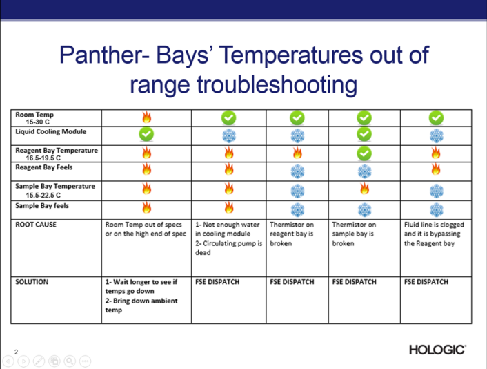
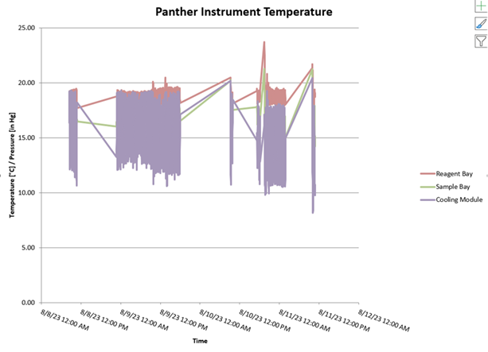

Sample or Reagent Bay Temperature Is Out of Range
Error Codes
| Dec | Hex |
|---|---|
|
096.000.00080 112.000.00080 024.000.00048 |
Sample Bay Reagent Bay Reagent Bay |
Complaint Description
Sample or Reagent Bay temperature is out of range.
TABLE OF CONTENTS
Technical Support
Possible root cause:
-
Room temperature too high
-
Water in Cooling Module is too low. Water level should be about an inch above the top notch.
-
Failed Cooling Pump
-
Cooling Module Peltier failure
-
Reagent Bay Thermistor failure
Technical Support troubleshooting:
-
Check lab temperature. Temperature should be 15 - 30C.
-
Check temperature of reagent and sample bays by feel.
-
Sample bay temperature range: 15.5-22.5C. Reagent bay temperature range: 16.5-19.5C.
-
Check Cooling Module water level. Level should be about an inch above the top notch.
-
Check for loud noise coming from the right side of the instrument.
-
Refer to troubleshooting table below:

Field Service
Faulty Thermistor
-
In Service Software, make sure the temperature read from Reagent Bay module, normal range from 15.5 to 22˚C, matches the calibrated thermometer reading from Reagent Bay.
-
Make sure thermistor is connected.
-
Check for thermistor broken wire.
Resolution
Replace Thermistor as needed, per the removal and replacement procedure in the Panther Service Manual.
Reagent Bay PCB
Check for burnt components or signs of spills on the Reagent Bay PCB.
Resolution
Replace the Reagent Bay or its PCB as needed, per the Panther Service Manual.
Cooling Module
-
Insure the cooling module is working properly and fluid is flowing.
-
Make sure there are no clogs in the cooling lines.
Resolution
If it is determined to be a cooling system issue, refer to the Cooling module troubleshooting section.
TSE Fault Mode Example
08/11/2023 01:46:48 (10 20:46:48) [E] (Critical , High ) [SampleLoadingBay] Sample Bay temperature is out of range (TemperatureEvent) [0x60.0x00.0x0050] bytes: 60 00 03 00 50 DD 05 [096.000.00080]
The thermistor in the Sample Bay only reports temperature.
The cooling system does not use that information to drive cooling.
The Reagent Bay’s thermistor drives cooling.
Either the Reagent Bay has a bad thermistor, or there is a blockage in the lower tubing of the Reagent Bay. When that happens, the coolant flows through the back radiator and does not cool the bottom of the bay, where the thermistor resides. Since the Reagent Bay is not making temperature, the Liquid Cooling keeps driving its temperature down.
The Liquid Cooling minimum temperature thermistor should protect the module from freezing, but not if it is low on fluid. Also, remember when the Liquid Cooling module suction hose and return hoses were reversed? That could cause a similar problem. Also, at one-point Stratec was cutting the suction tubing in the Liquid Cooling module at 90 degrees. The tubing would, sometimes, suction to the bottom of the reservoir and no coolant would flow. It would be intermittent.
Notice in the image below, the temperature in the cooling module is going lower and lower, while the Reagent Bay is going higher. That indicates that the physical flow is not happening. The Cooling module continues to try and fight to cool the bays per the feedback control loop. This is most likely due to a blockage.

 button at the top of the page to send feedback, comments, or change requests.
button at the top of the page to send feedback, comments, or change requests.